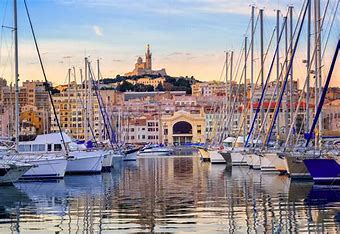

<header>
    <h1>Bienvenue à Marseille</h1>
    <nav>
        <!-- en cliquant sur le logo ont revient a la page daccueil -->
        <div class="header-box">
            <a href="marseille.html">
                
            </a>
          </div>
        <ul>
            <li><a href="histoire.html">Histoire</a></li>
            <li><a href="randonnees.html">Randonnées</a></li>
            <li><a href="plages.html">Plages</a></li>
            <li><a href="parcs.html">Parcs</a></li>
            <li><a href="musees.html">Musées</a></li>
            <li><a href="contact.html">Contact</a></li>
        </ul>
        
    </nav>
</header>
<footer>
    
<h1>Marseille : Un Voyage à Travers le Temps</h1>
<h2>De la Préhistoire à la Métropole Moderne</h2>
<div class="header-box">
    
</div>
   <br><h3> L’histoire de Marseille est une aventure fascinante qui s’étend sur plus de 2600 ans.</h3>
    Bien que le site ait été occupé dès les temps préhistoriques, comme en témoigne la grotte Cosquer, la ville a été officiellement fondée en 600 av. J.-C. par des colons grecs venus de Phocée. Elle est devenue la principale cité grecque de la Méditerranée occidentale et la principale porte de communication entre les civilisations grecque et gauloise.

<br><h3>Après sa conquête par Jules César en 49 av. J.-C., </h3>
Marseille est devenue une cité romaine1. Bien qu’elle ait été éclipsée par Arles pendant un certain temps, elle a repris son rang et est devenue, après les conquêtes des Wisigoths puis des Francs jusqu’au XIIe siècle, l’une des places majeures de l’Église romaine dans le sud-est de la France.

<br><h3>Moyen Âge,</h3>
 Marseille a connu une période de déclin, marquée par la peste noire et des temps troublés1. Cependant, au XVe siècle, la ville et le duché de Provence sont devenus une possession française, ce qui a donné à Marseille un nouveau rôle dans l’affirmation de la puissance royale et le développement du commerce méditerranéen.

<br><h3>XIXe siècle,</h3>
 Marseille a connu une très forte expansion avec le développement industriel et commercial en lien avec l’importance croissante de l’empire colonial français1. Malgré les destructions durant la Seconde Guerre mondiale et la fin de l’empire français, Marseille s’est relevée pour retrouver, à la fin du XXe siècle, une situation plus favorable.

<br><h3>Aujourd’hui, Marseille est une métropole dynamique,</h3>
 riche de son histoire et tournée vers l’avenir. Sa longue histoire a laissé une empreinte indélébile sur la ville, façonnant son identité et sa culture uniques.
<h2>Détails Historiques</h2>
<h3>L’occupation humaine du bassin de Marseille remonte au Paléolithique moyen,</h3>
 environ 60 000 ans avant notre ère. Plusieurs sites du Paléolithique supérieur, entre 27 000 et 10 000 ans avant notre ère, dont celui de la grotte Cosquer, l’un des plus vieux témoins d’art pariétal européen, sont également connus.

<br><h3>Au VIe millénaire avant notre ère,</h3>
 des pasteurs et paysans néolithiques issus d’une migration dont l’origine se situe en Méditerranée orientale accostent dans le bassin. Ils introduisent en Provence le blé et l’orge, le mouton et la chèvre domestiques, la pierre polie et la céramique.

<br><h3>Durant le premier âge du Fer,</h3>
plusieurs sites (oppida) sont signalés dans le bassin parmi lesquels la Tourette, à Saint-Marcel, qui serait l’habitat des Ségobriges, les Gaulois de la légende de Gyptis et Prôtis.
 <link rel="stylesheet" type="text/css" href="histoire.css">
</footer>